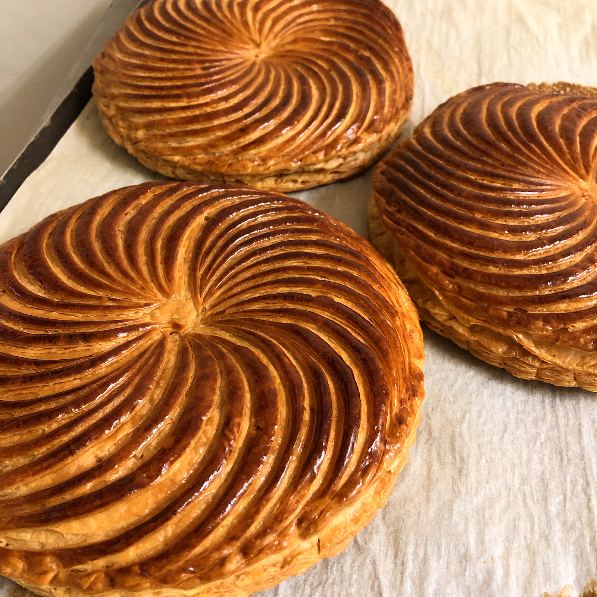
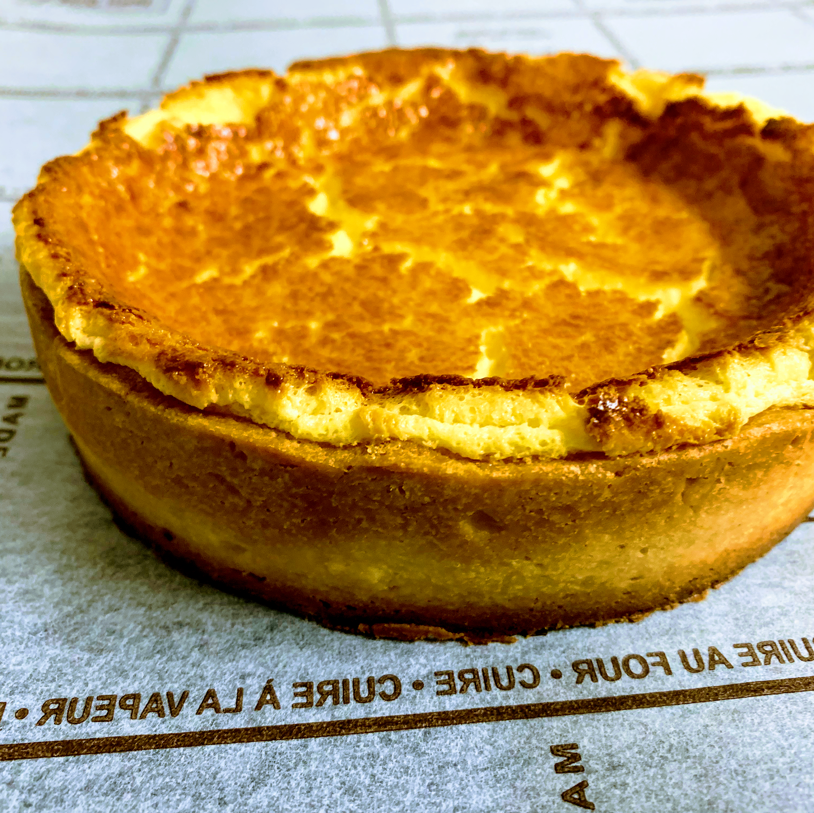

お店について
ベーカリーフェーブは、柏市泉町の通り沿いにひっそりと店を構える小さなパン屋です。大きな店ではありませんが、その小ささゆえに、一つひとつの生地と向き合う時間を大切にしています。

写真提供: ベーカリーフェーブ
フランス菓子由来の生地づくり
店名の「Boulangerie feve」には、フランス菓子由来の技法への思いを込めています。生地の食感や焼き色にひとつひとつ気を配りながら、日々の品々を仕上げています。
目の届く範囲で、一つずつ
店内は決して広くはありませんが、だからこそ焼き上がりの一つひとつに目をかけることができます。こじんまりとした空間だからこそ生まれる丁寧さを、大切にしています。

写真提供: ベーカリーフェーブ
柏の街とともに
柏駅から少し歩いた、落ち着いた通り沿い。地域の皆さまが日常の中でふらりと立ち寄れる、そんな街のパン屋でありたいと考えています。
店内の雰囲気
店内に一度にお入りいただけるお客様の人数は限られており、状況によって少人数ずつのご案内となる場合がございます。こじんまりとした空間だからこそのアットホームな雰囲気を、ぜひ実際に店頭で感じていただければと思います。
「壁掛けの小物？類も、思わず写真を撮ってしまいたくなります！」
— Googleマップのクチコミより(投稿者: おとみ)